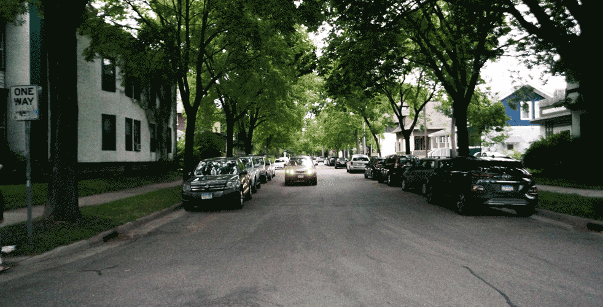

The vast majority of Minneapolis streets are dominated by car traffic and are unsafe for pedestrian life. This vehicular dominance has been normalized on our urban corridors and needs disrupting. That said, many residents are unsure of how to advocate for their neighborhoods and what design strategies are available beyond lowering speed limits. This publication equips urban residents of Minneapolis with knowledge of data, traffic calming strategies, and resources for advocating for people-first infrastructure on their local streets in order to create future streetscapes that benefit all users.
The central deliverable of this project is a printed publication that focuses on creating a tactile experience for the reader. Each of the four chapters is printed on various substrates with layered inserts, flip books, fold outs, and tear-out postcards along the way. The physical production of the piece allows readers to digest the information one chapter at a time and feel inspired to take action and advocate as they absorb information.
Enthralled by a semester abroad studying urban design in Copenhagen, Denmark, I shifted my undergraduate focus from art to geography and delved into mapping and data visualizations that support sustainable transportation. My interest in this intersection between design and geography continued to grow and led me to create a zine, enroll in MCAD's MAGWD program, move to Copenhagen for 18 months, and pursue a career in graphic design. I currently reside in Minneapolis and spend my free time cross country skiing, playing piano, and drooling over midcentury Danish furniture.
See more of my work at catherinebretheim.com